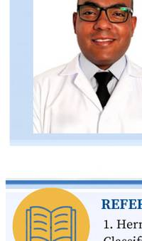

ARTIGO · MATÉRIA DE CAPA — IA E RESSONÂNCIA MAGNÉTICA
15
A IA não redefine apenas a tecnologia da RM. Ela redefine expectativas, amplia responsabilidades e inaugura uma nova identidade para o técnico e o tecnólogo em Radiologia. Mais do que dominar equipamentos, esses profissionais serão chamados a interpretar informações, integrar conhecimentos, liderar processos de inovação e manter viva uma característica que nenhuma máquina consegue reproduzir plenamente: a capacidade humana de aprender, adaptar-se e cuidar.
No fim, a grande transformação não está apenas nas imagens produzidas por algoritmos cada vez mais sofisticados. Está na evolução daqueles que, todos os dias, fazem da tecnologia um instrumento a serviço da ciência, da ética e da vida.

Alexsandro Euripedes Ferreira é Doutor em Ciências pela Universidade de Franca (UNIFRAN), onde realizou estágio pós-doutoral no Núcleo de Ciências Exatas e Tecnológicas, com ênfase em espectroscopia de RM aplicada a produtos naturais e sintéticos. É Professor Assistente I no Departamento de Ciências da Saúde da UNIFRAN. Membro associado da Associação Brasileira de Tecnólogos em Radiologia (ABTER), membro titular da cadeira nº13 da Academia Brasileira de Ciências Radiológicas (ABCR).
REFERÊNCIAS
1. Hernandez-Trinidad, A. et al. Applications of Artificial Intelligence in the Classification of MRI. IntechOpen, 2023.
2. Lundervold, A.S.; Lundervold, A. An Overview of Deep Learning in Medical Imaging. Z. Med. Phys. 2019, 29, 102–127.
3. Syed Adam, C.A.; Bhatt, Z. Artificial Intelligence in Radiology. Semin Musculoskelet Radiol 2018, 22, 540–545.
9. Mohseni, A. et al. Artificial Intelligence in Radiology. Radiol. Clin. 2024, 62, 935–947.
10. Hardy, M.; Harvey, H. Artificial Intelligence in Diagnostic Imaging. Br. J. Radiol. 2020, 93, 20190840.
12. Tejani, A.S. et al. Artificial Intelligence and Radiology Education. Radiol. Artif. Intell. 2022, 5, e220084.
ALÉM DA IMAGEM · CORED-SP · CRTR-SP
15